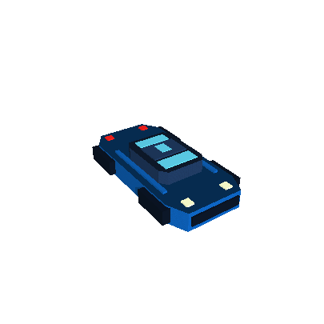

DISTANCE · DIRECTION
Know where the turn is.
Metric and imperial distances, roundabout exits and common distance-and-turn lines are covered by the recordings.
Waypoint · Release 2.8.0
Los Santos navigation now has pre-recorded Trevor clips for turns, distances, roundabouts, rerouting and arrival. Android text-to-speech covers instructions without a matching clip and cases where clip playback cannot start.
01 / LOS SANTOS
Navigation instructions use original pre-recorded clips in Trevor's voice. The set covers turns, distance callouts, roundabouts, exits, rerouting and arrival. Only Los Santos uses these clips; missing or unplayable clips fall back to Android text-to-speech.
DISTANCE · DIRECTION
Metric and imperial distances, roundabout exits and common distance-and-turn lines are covered by the recordings.
REROUTE · ARRIVAL
Rerouting and arrival have their own clips. Less common instructions keep using Android text-to-speech when a matching Trevor clip is not available.
02 / NAVIGATION
The camera now follows interpolated GPS positions while zoom and tilt settle smoothly. A fresh GPS fix no longer restarts camera animations and makes the view jump up and down.
Arrival guidance is now queued after navigation stops, so the stop request does not cancel the arrival line before it can play.
03 / POSITION
Car, Motorcycle and Bicycle models now render consistently in flat and tilted map snapshots. Settings previews show each vehicle from a three-quarter front view.
